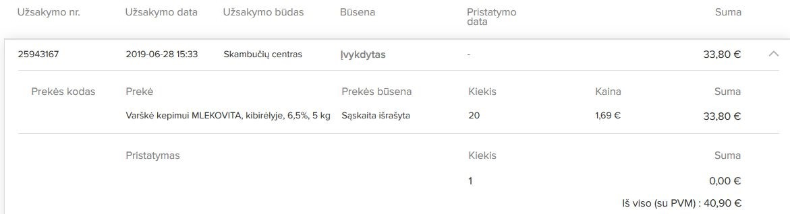

Pagrindinis
Majonezas ir dar kartą Majonezas
Tik sausa statistika, majonezo pirkimai (kg)
Įdomu tai, kad iki lūžio taško
buvo vienas tiekėjas - Sanitex, po jo Reaton.
Kaina ne pigesnė, nebent ThermoFisher, atsižvelgdama į darbuotojų norą matyti kuo mažiau
majonezo sudarė specialią sutartį majonezo didesniam pirkimui.
Ir nuo to momento majonezas pradėtas dėti VISUR, spjaunant į visus komentarus.
Liepos mėn. gauta 470 kg majonezo..
t.y. jei valgytų VISI 900 darbuotojų, ir tai darytų KASDIENĄ, jiems tektų po 26 g majonezo KIEKVIENAM KAS DIEN J
Bet kaip žinia, valgo ne visi 900 ir meniu kaizen apklausa rodo kad
majonezas nėra prioritetas...
Salotos/garnyrai/padažai/sriubos
Kas lieka - kriauklė
Pradėjus man garsiau reikšti nuomonę apie šią nesamonę prasidėo įdomūs dalykai.
Majonezas pradėtas, nors ir labai juokinga, SLĖPTI kur
tik įmanoma.
Organizatorius Kęstutis Slivko
Štai tada ir prasidėjo, kad Egidijus „nepalankus“
O aš pradėjau krapštyti giliau J
_bylos/image004.jpg)
Pjaustyklės
2019-01-18 d. gautos dvi profesionalios pjaustyklės.
Tiekėjas Sanitex (sąsk. Nr. SBL5786566)
(Pjaustyklė
MANDOLINE V, komplektas (5 dalių,
daržovių laikiklis, stovelis Kodas: U95J1EP / Brūkšn. kodas: 8421661975506 / Kaina
19.85 € )
_bylos/image006.jpg)
Pjaustyklių niekas nei matė nei negirdėjo
Organizatorius galimai Kęstutis
Slivko
Šonkauliai prieš savaitgalį
2019-07-12 (penktadienis) gauti šonkauliuokai,
kurių niekas nei matė, nei girdėjo.
Prekių priėmėjas Kęstutis S.
Organizatorius/dalyvis Kęstutis
Slivko
Šampanas
2019-08-12
gauti trys šampano buteliai
(Šampanas VEUVE BONNEVAL
Blanc, 12,5%, 0,75 l, Kodas: H31367M , Brūkšn. kodas:
3263286519780, Skonis : Briutas, Tūris : 0,75 l, Spalva : Baltas)
Vienas butelis kurį laiką (vieną dieną) pastovėjo spintelėje prie sirupų ir prapuolė._bylos/image011.jpg)
_bylos/image015.jpg)
Gauto šampano niekas nematė ir
negirdėjo….
Organizatorius Kęstutis Slivko, dalyviai Jūratė Ramoškienė? +
Midus
_bylos/image017.jpg) 2019-08-06
dieną buvo gauta 79 buteliukai midaus.
2019-08-06
dieną buvo gauta 79 buteliukai midaus.
(Sąskaitos nr SBL6028975, tiekėjas Sanitex)
Nieko tokio, BET
Midus buvo jau su pasibaigusiu galiojimo terminu!
Midus pajamuotas
kaip gaivusis gėrimas
Ir dalintas
į kairę bei dešinę, bei pardavinėtas
kaip sultys (foto yra Egidijaus
S. kvitas)
Midus buvo užsakytas per „Skambučių centras”,
t.y. paskambinus vadybininkei ir susitarus.
Šiuo metu
Sanitex sistemoje šios prekės nebėra.
Varškė
2019-07-01 dieną buvo gauta
20 kg varškės (4 kibirai po 5 kg)
Tiekėjas Sanitex, sąskaita SVD0802977 (Varškė kepimui MLEKOVITA, kibirėlyje,
6,5%, 5 kg)
Pastebėtina! - Kęstutis priiminėjant prekes belakstant prasitarė - “Tai kam prašo, kad
pagelbėčiau su varške, jei nesugeba
įdėti”….
Bet, įdeta visgi buvo.
Pastebėtina! - Varškės galiojimo teriminas buvo ant ribos, tokia varškė buvo
gauta pirmą kartą. Joks meniu
su varškės naudojimu iš anksto
nebuvo numatytas.
Pastebėtina! – užsakymas darytas per “Skambučių centras“, t.y.
tiesioginiu kontaktu telefonu su vadybininke.

Varškė numatytam meniu
gauta 2019-07-03, kiekis 60 kg,
Tiekėjas Reaton,
sąsk.nr. REAT667157
Privatumas persirengimo
kambario spintelėse
Per laiką, juokus ir
situacijas pavyko išsiaiškinti, kad Kęstučio Slivko iniciatyva buvo įlysta į mano drabužinės spintelę, bei joje
esančią kuprinę. Ir galimai tai daryta ne vieną kartą.
_bylos/image027.jpg)
Organizatorius ir vykdytojas
Kęstutis Slivko. Dalyviai – tuo metu esantis kolektyvas,
ar jo dalis.
Taip pat, vienu metu nuo lentynėlės valgyklos darbo zonoje buvo dingę
mano minimos spintelės raktai. Garsiai pasiteiravus “kur padėjot mano raktus”, po kurio laiko juos
neva rado Rima Stankevič.
Dingusi
piniginė
2017-09-04
(pirmadienis) dingo mano piniginė.
Istorija tokia – aš netyčia palikau savo raktelius spintelėje, spintelę
atrakinau, nes reikėjo prisidėti prie dovanos pirkimo bendradarbei. Išėmęs
pinigus (5 eurus), piniginę, tiesiog numečiau ant spintelėje esančios kuprinės. Raktelius
per skubėjimą palikau spintelėje. Po kiek laiko prisiminęs/pasigedęs spintelės
raktelio, spintelę nieko netikrindamas užrakinau. Piniginės pasigedau po darbo
vakare. Niekur kitur jos nesinešiojau ir nenaudojau. Todėl drįstu teigti, kad
piniginė dingo tuo metu dirbusio kolektyvo pagalba. Manau, kad tai turėjo būti
neva pokštas, bet dalyvių pamirštas ir sekančią dieną užklausus apie dingusią
piniginę – niekas nieko nebežinojo.
Tuo metu dirbo Kęstutis Slivko, Rima Stankevič, Danuta Maslovska, TopClean. (p.s. tiekėjai, vęžę tą dieną
prekes negalėjo prisidėti, nes spintelė palikta atidaryta jau po visų prekių
priėmimo),
Prisiimu visas atsakomybes ir kaltinu Kęstutis Slivko
bei Rimą Stankevič prisidėjus prie piniginės dingimo.
Privatumo politika?
2019-05-22 Aleksandras Školnik iš Rimos Stankevič gavo savo spausdintą CV, kuris buvo siūstas dar prieš įsidarbinant įmonėje. Lapas (pasak Rimos)
neva buvo rastas spaudintuve....
Čia trumpa diskusija apie tai
ir p. Rimos reakcija apie šį klausimą (paskutinės sekundės manau pasako viską)
Organizatorius Kęstutis Slivko, dalyviai Rima Stankevič
Etika – Bendravimo
kodeksas
Kiekvienas turim savo vardus
– Kęstutis, Jūratė, Rima,
Aleksandras, Simona, Egidijus, Dijana ir t.t.…..
Bet
ne visiems (ne Kęstučiui)
Egidijus
yra Leonas, Leopoldas, Leonardas
Rima
yra Rimiškė, Chujiškė
Jūratė yra Dezdemona, Gertrūda ir kelis kartus
“pyzda tu”
Aleksandras
yra aleksandrovičius
Pvz:
Ir ne kartą,
esant emocijų proveržiams – Simona, Aleksandras vadinti
šizoreniku, debilu, paranoiku.
Niekas kitas iš kolektyvo Kęstučio
nevadino niekaip kitaip kaip Kęstutis,
ar Kęstas.
Čia tik vienas iš epizodų kaip Kęstučio pasisakoma apie žmones (klientus):
Prie šito galima produrti, kad Aleksndras iš vienos darbuotojos girdėjo pasisakymą, kad į
valgyklą neina valgyti tik dėl patiriamo streso.
Lapeliai į atsiliepimų dėžutę
_bylos/image037.jpg) VLG yra tipo pašto dėžutė, į kurią
klientai gali mesti savo atsiliepimus - teigiamus arba neigiamus.
VLG yra tipo pašto dėžutė, į kurią
klientai gali mesti savo atsiliepimus - teigiamus arba neigiamus.
Šią dėžutę dalima sudeginti,
nes į ją keliauja lapeliai parašyti (žinoma ne visi, bet tikrai ne vienas
kartas).... Kęstučio Slivko iniciatyva... šiuo atveju
Lapelio žinutė būna tikslingai nuteikta prieš tuo metu nemėgstama/mėgstamą asmenį.
Man asmeniškai teko dalyvauti šiame procese, kai Kęstutis
davė lapelį su surašytu tekstu apie kritiką Simonos verdamoms sriuboms. „tu
įmesk, mes ją pamokysim, reik ją pamokyt“, tekstas buvo maždaug toks „Sriubos
šią savaitę vien tik druska ir pipirai“
Organizatorius Kęstutis, dalyviai aš (tą
pačią dieną deklaravau) ir pasak Kęstučio “žinom tik tu,
Jūratė ir aš, net Rima nežino”…. Po visko – “Na kaip, gerai ją
pamokinau”, Jūratės panašus atsiliepimas. Gaila tas lapelis
neišsaugotas.
Taip pat kolegos
yra užsiminę apie tokias situacijas.
O čia vienas iš
geresnių tokių situacijos pavyzdžių
Du
feikiniai lapeliai. Organizatorius Kęsturis Slivko, vykdytoja Danutė Bachvalova (TopClean)
Darbo metodai
Vienam galima – kitam griežtai ne, arba kaip darbuotojams (nemėgiamiems) specialiai sukuriamos sunkinančios aplinkybės, bei siekiamas kenkimas.
 Skamba neįtikinamai, bet
Skamba neįtikinamai, bet
Dirba Egidijus salotų skiltelėj
> Tą dieną šaltibarščiai > prie šaltibarščių bulvės į atskiras mažas lėkštutes > desertas į mažas lėkštutes > salotoms neužtenka lėkštučių > keliamas klausimas - gal dedam į vienkartinius, kaip ankščiau, visai neseniai? – ne negalima > salotos stringa, nes NĖRA Į KĄ DĖTI.
Egidijus kaltas dėl salotų.
Tier lentoj pažymima salotos raudonai, o ne indų trūkumas.
Ir visą dieną buvo
“pushinimas” dėl salotų, duok duok
duok…. Nors kažkurią dieną nebuvo bėdos dėl
salotų nebuvimo 10-20 min.
(08/22) buvo šaltibarščiai, ir salotos ramiu veidu
buvo dedamos į vienkartinius, salotose dirbo Rima.
IR
tai vyksta jau nuo labai seniai,
jei ne nuo pat pradžių…
 Čia pokalbio tarp Kęstučio ir Simonos santrauka, kaip Kęstutis didvyriškai Aleksandrui
specialiai užsakė žuvies, kurią reikėjo skusti ir filiuoti....
Čia pokalbio tarp Kęstučio ir Simonos santrauka, kaip Kęstutis didvyriškai Aleksandrui
specialiai užsakė žuvies, kurią reikėjo skusti ir filiuoti....
Data - 2015 vasario mėn J
Apie tokius dalykus, kai atleidime Kęstutis gali dėti
daugiau to produkto (troškinio), kurio galimai gali trūkti
ir bus bėdos… apie išjungiamus ryžių virimo puodus.. (yra du
puodai vienas virtuvėje, kitas salėje, salėje vis kažkaip išsijungdavo) aš
vieną dieną niekam nematant apkeičiau juos. Salėje tas puods
vis išsijungdavo J
Ir dar daug daug dalykų tokių,
kaip sudeginti balandėliai, persūdytos sriubos, užkaitintos (sudegintos)
kreminės sriubos... apie tai manau kolektyvas galėtų daug ką pasakyti...
Yakitori – iškepti vištienos mėsos iešmeliai su soja, šąldyti.
(Čia galiu kysti, nes iki galo negaliu
patikrinti nfo)
(vienas iešmelis – 30 g. mėsos, suverta ant bambukinių
iešmelių)
|
Tiekėjas Reaton Reaton svetainėje yra tokia info: Vištienos mėsa (Yakitori Soya) ant iešmo,
30g, kepta, šald.,
6*1.5kg Iešmeliai supokuoti dėžutėse po 1,5 kg, kuriose yra po 50 vnt po 30 g. mėsos iešmelių. Tiekimo dėžėse yra 6 vnt dėžučių, t.y. po 9 kg kiekvienoje (6x1,5)
|
_bylos/image049.jpg)
Apie tuo metu užimtą šaldymo kameros tūrį ir
nepatogumą nekalbame.